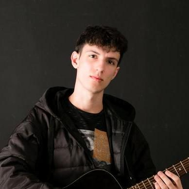

Portfólio de Rafael Simão Carneiro — menu de canais
Quem sou eu
Minha história, habilidades e música
Meus projetos
Jogos e sites que eu criei
Fale comigo
Escolha por onde conversar

Olá, sou Rafael Simão Carneiro.
Minha história, habilidades e música
Jogos e sites que eu criei
Escolha por onde conversar